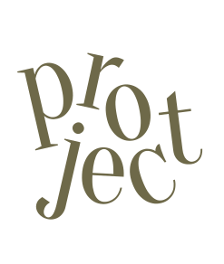

NICE WEATHER

나이스 웨더 브랜드의 색상과 아이덴티티를 유지하며 사이트를 리디자인
모바일 퍼스트로하여 태블릿, 데스크탑 버전의 브레이크 포인트를 지정하여 반응형 제작
웹폰트를 cdn방식으로 연결하고 주 서체 뒤쪽으로 시스템 서체를 폴백으로 연결하여 사용
포인트로 사용하는 메인 폰트는 Drunk Wide로 나이스웨더의 아이덴티티를 살리기 위해 로고의 폰트를 소제목이나 이름에 사용
두번째 메인 폰트는 Montserrat으로하여 영문, 한글, 숫자 모두 가로로 길고 깔끔한 느낌을 주는 폰트를 사용
기본 한글 폰트는 사용자가 읽기 쉬운 NotoSans KR폰트 사용
Drunk Wide
Montserrat
NotoSans KR
사이드 메뉴를 클릭했을 때 새로고침이 되어 맨 위로 올라가는 문제
-> preventDefault값을 주어 새로고침이 되지 않도록 a태그가 원래 가진 기능을 없애줌
사이드 메뉴에서 메뉴 이외의 부분을 처음엔 메뉴에 box-shadow값을 주어 어둡게 보이도록 계획했었음
-> 메뉴 토글버튼을 눌렀을 때만 사이드메뉴가 보여지고 사라지는 것이 사용자에게 불편할 수 있다고 느낌
-> 사이드 메뉴를 감싸는 div를 추가하여 div의 z-index를 메뉴의 z-index값의 다음으로 하여 항상 사이드 메뉴의 바로 뒤에 따라다니도록 설정해주고, 사이드 메뉴가 가리지 않는 div의 부분을 사용자가 클릭했을 때도 또한 메뉴가 닫힐 수 있도록 js값을 부여함
두번째 개인 프로젝트는 반응형 홈페이지 제작을 하였다. 나이스웨더 브랜드를 선택하였고 나이스 웨더의 아이덴티티를 살리며 홈페이지를 리디자인하고 이를 반응형 홈페이지로 만드는 작업이었다.
모바일 퍼스트로 하여 모바일, 태블릿, 데스크탑에 각각 대응하도록 세가지의 버전으로 css를 작성하였다. 반응형 홈페이지는 오랜만에 제작하는 거였지만 프로토 타입을 각각의 버전별로 만들어 이에 맞추어 제작하여, 이번 작업은 큰 어려움 없이 빠르게 작업했던 것 같다.
이번 작업은 정보전달을 중심으로 한 애니메이션이 적은 홈페이지 였지만 다음작업에서는 더 많은 애니메이션과 모션을 넣은 페이지를 반응형으로 만들어보고 싶다.
하나하나 직접 계획하고, 계획한 대로 작업하여 완성시켜나가는 일이 흥미롭고 뿌듯하다. 변화가 빠른 분야인 만큼 이에 발맞추어 새로운 여러가지를 공부하고 작업 할 앞으로가 더 기대된다.